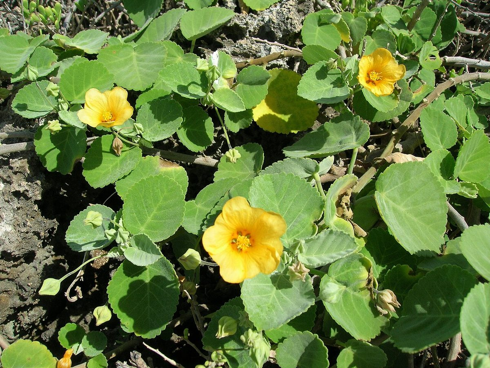
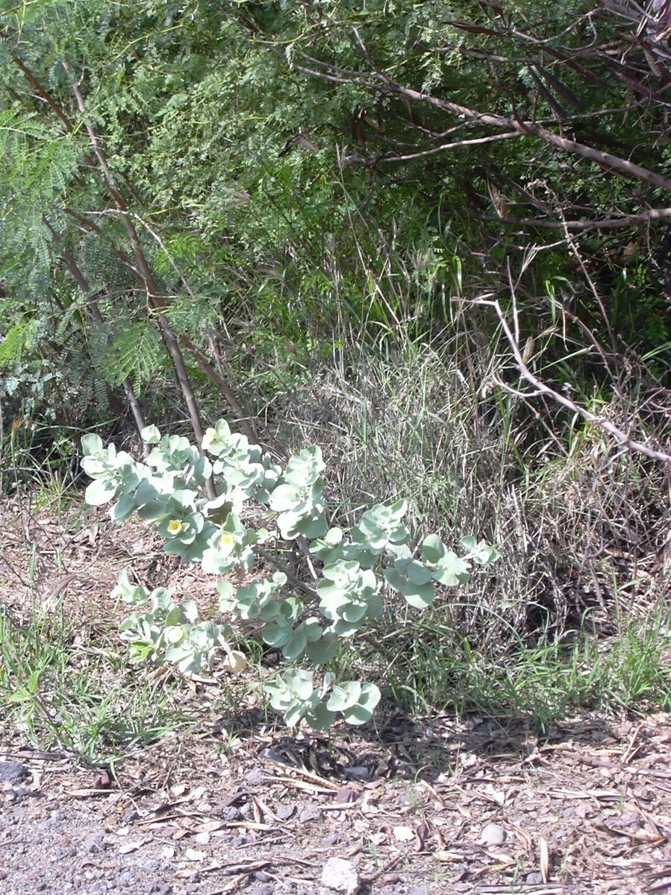

COMMON Beach strand Dune Sea cliff
Sida fallax
ʻilima, ʻilima papa · yellow ʻilima, false mallow


Quick facts
| Family | Malvaceae |
|---|---|
| Scientific name | Sida fallax |
| Hawaiian name(s) | ʻilima, ʻilima papa |
| English name(s) | yellow ʻilima, false mallow |
| Status | Indigenous (native, non-endemic) |
| Conservation | — |
| Coastal zones | Beach strand Dune Sea cliff |
| Occurrence | Widespread indigenous mallow across Kauaʻi's dry coastal ground. On the roadless coast it occurs as the prostrate ʻilima papa form on strand and low dunes (Māhāʻulepū, Kalalau back-beach) and as a small erect shrub on dry lower sea-cliff slopes and valley mouths. |
How to identify
- Growth form
- Two coastal expressions of one species. Coastal papa form: prostrate, forming low mats. Interior/upland form: erect small shrub 0.5–2 m tall.
- Size
- Coastal papa form: mats to 1 m across, only a few cm tall. Upland form: to 2 m tall.
- Leaves
- Alternate, ovate to elliptic-oblong, 1–5 cm long, with a rounded to heart-shaped base and toothed (serrate) margins. Both surfaces densely covered with tiny star-shaped (stellate) hairs — a hand-lens confirms the family Malvaceae here.
- Flowers
- Solitary in leaf axils, five bright yellow-orange petals ~1.5–2.5 cm across, with the fused stamen column typical of mallows. Blooms year- round.
- Fruit / seed
- A schizocarp splitting into 5–10 wedge-shaped mericarps ("segments"), each usually with one or two seeds.
- Bark / stem
- Slender woody stems on erect plants; wiry on the papa form.
- Where it sits on the coast
- Dry strand, low stabilized dunes, and the drier lower sea-cliff/valley- mouth slopes. Absent from wet valley forests.
Clinchers (features that lock the ID)
- Bright yellow-orange five-petaled mallow flower on a coastal shrub or prostrate mat.
- Alternate serrate leaves densely stellate-hairy — feel and hand-lens confirm.
- Coastal papa (prostrate) growth form on strand is diagnostic when combined with the flower.
- Fruit a dry schizocarp splitting into wedge segments (not a berry, not a capsule).
Look-alikes
- Waltheria indica (uhaloa) — Also a common yellow-flowered coastal shrub with stellate-hairy leaves, but leaves are more densely velvety and grey-green, flowers are much smaller (~4 mm) and clustered in dense axillary heads rather than solitary showy 5-petaled blooms.
- Abutilon spp. (introduced coastal mallows) — Abutilon flowers are usually larger, cup-shaped, and often yellow with a darker centre; leaves are broader, cordate, and often velvety soft rather than dense-stellate on both faces.
Ecology
Halophyte tolerant of salt spray and dry, rocky substrates. Fixes into low mats on wind-scoured strand, contributing to early dune stabilization alongside pōhuehue and ʻakiʻaki. Larval host for the endemic Blackburn's sphinx moth in some habitats. [16], [21], [22]
Cultural significance
ʻIlima is the island flower of Oʻahu and one of the classical lei-making flowers. Its cultural weight is well-documented; this guide names that significance without giving harvesting instructions, which belong to Hawaiian lei-makers and cultural practitioners.